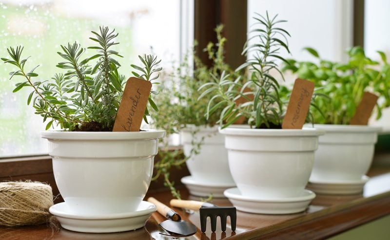
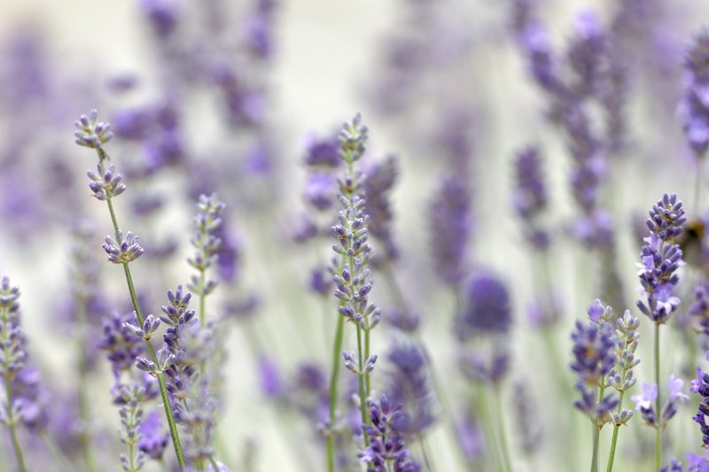

Lavender – Culinary Use
Lavender has been long prized for its scent and healing properties. While most of us know about the beauty and fragrance of lavender, somehow we have forgotten that it is indeed a herb. One’s imagination is the only limit when using this herb in food preparation.
I’ll be honest, for some reason, this ingredient has long intimidated me, so it was high time to learn how to use it in my recipes. There are a few tricks to incorporating it into your spice cabinet, so I thought I would share what I have learned so far.

Lavender Appearance and Aroma
- English Lavenders are the preferred lavenders to use culinarily as they are milder, sweeter, and do not overpower the dish.
- Provence lavender, a hybrid known as lavender, has a milder flavor and is often used when English Lavender is not available.
- The pink-flowered lavender known as Melissa has a sweet, yet floral note, and enhances dishes such as soups, drinks, and desserts.
All culinary lavender blends very well with citrus, mint, rosemary, sage, berries, fruit, drinks. However, one should use some caution not to use too much. Lavender should be a background flavor, not in the forefront. When used in proper proportion, it enhances foods with a distinctive and mysterious flavor while adding lovely color to your dish.
If you add too much, it can taste like perfume, and there isn’t much you can do to save the recipe. So the key to using lavender is to experiment; start with a small amount and add more as you go, working the flavor profile to your liking. As in all herbs, the dried version is more concentrated in flavor.
What does Lavender taste like?
Delicate, floral, with lemon and citrus notes, is an excellent way to describe the taste of lavender. Interestingly enough, it is part of the mint family. Be sure if you pick and dry your own for culinary use, the flowers are pesticide-free. You can use the flowers, leaves, or stems. I like to use the delicate buds because the taste of the leaves and stems is stronger and can be bitter.
Chopping or bruising the buds will help release the flavor. Chopping can be done quickly in a food processor, coffee grinder, or spice grinder. If you use a grinder, you may need to add enough volume of flower buds to avoid a purple tornado that just spins and spins, never breaking down. I did a couple of tablespoons at a time and stored it in a dark glass jar out of the light.
NOTE: Adding too much lavender to your recipe can be like eating perfume and will make your dish bitter. Because of the strong flavor of lavender, the secret is that a little goes a long way.

Drying Lavender Flowers:
When drying lavender, the stems are bunched together with a rubber band or tie that will allow for shrinkage of the stems as they dry. To dry them:
- Start by grouping about a dozen stems together in each bunch.
- Place rubber bands on the stems so it can be attached to hooks for hanging.
- Hang the lavender bouquet upside down (flowers on the bottom). Lavender needs to be dried in a dark, dust-free place with proper ventilation to allow for quick and complete drying. Hanging the bouquet upside-down to dry will draw the essential oils down into the flower buds, making them more fragrant and flavorful. After they are dry, roughly seven days, you can put the dried lavender bundles around your house or use them for cooking.
- Once dried, I remove the flowers/buds and store them in glass containers with tight-fitting lids, so the oils will not escape. By doing this, it helps to retain the flavor and fragrance. The stems can be used culinary wise, but I don’t use them.
- When you need some lavender for a recipe, remove the flowers/buds from the jar and grind them down. I use either my Magic Bullet or a coffee grinder that is used for grinding spices down.
How to Process the Dried Lavender Bouquet
- To remove the flower buds from the stem, gently roll the flower buds between your palms or gently pull down on the buds dragging your hand in the opposite direction that buds are growing.
- If you are going to cook with harvested culinary lavender, it’s a good idea to sift and shake the buds in a sieve to remove any unwanted dried particles from the flowers.
- Lavender stems are very flavorful and can be used as a drink’s stir stick. (just an idea)
Health Benefits of Lavender may include but are not limited to:
- Lavender oil is a marvelous antiseptic.
- Wrapped in cushions, dried flowers can help to induce sleep, and ease stress or depression.
- It can be brewed into a tea and used to relieve headaches, sinus congestion, hangovers, tiredness, exhaustion, and tension.
- Lavender is deeply rooted in aromatherapy. Its effect is calming, uplifting, refreshing, soothing, and purifying.
- Emotionally, lavender may help in creating a calm composure while reducing the effects of stress and irritability.
- It can help with insomnia, nightmares, nervous tension, apprehension, hysteria, and panic attacks.
- It is balancing to the body as well as the psyche.
Outside of culinary uses, you can use Lavender…(just a few ideas)
 In the Bath:
In the Bath:
- Excellent for aching muscles, relaxation, stress relief.
- Add 6-8 drops of lavender oil after running the water and vigorously agitate the water. Adding the drops to a capful of milk or Epsom salts and then putting in the bath helps to disperse the oils throughout the water. Lie back, relax, and enjoy!
In the Shower:
- After washing your hair, add a few drops to a capful of water and gently pour onto your head.
- Stand there for a few seconds, then dip your head under running water and allow oils to rinse off.
- Cup your hands over your face and breathe in the relaxing aroma.
- You can also add a few drops to your shampoo and cleanse your hair as usual.
Massage:
- Use for tight and sore muscles, under stress, or have sustained an injury. The oils will be absorbed quickly into the bloodstream, thus assisting the body and mind.
- NEVER massage UNDILUTED oils, always use a suitable quality carrier.
Eye Pillows:
- Make an easy herbal eye pillow for heating or cooling and placing on your eyes by mixing 1/2 cup flax-seed (buckwheat, rice, etc.) and 1/2 cup lavender and placing it in a simple sewn muslin square.
The above recommendations apply only to Healthy, Average sized Adults. Dosage for children, elderly, sick, or disabled persons should be a fraction of the above dosage. As with any essential oil, ALWAYS try a small amount on a “patch” test to see if the skin is reactive before any treatment.
© AmieSue.com